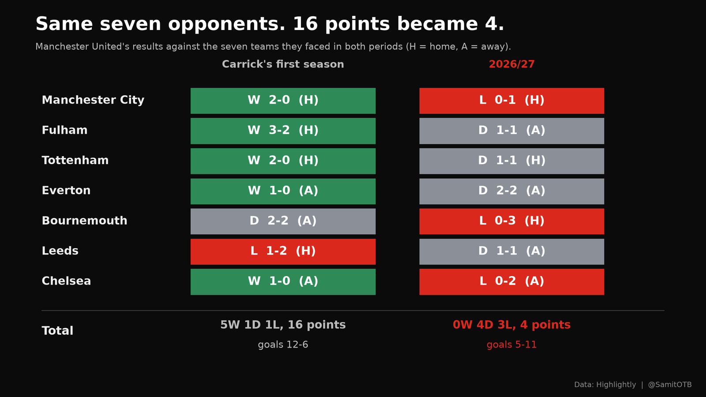
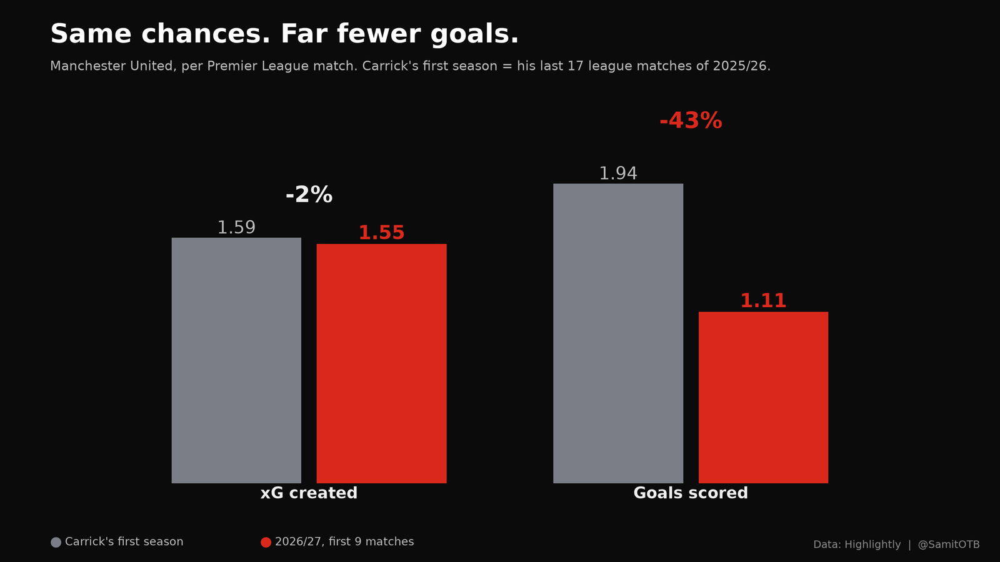
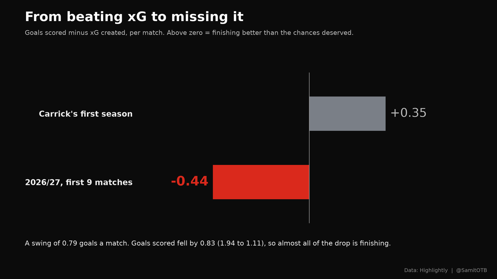
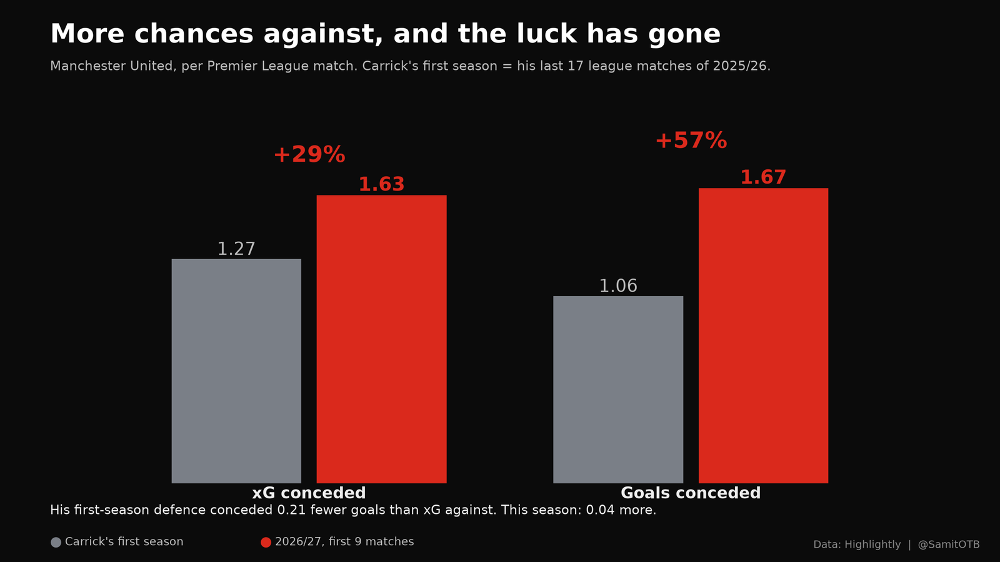
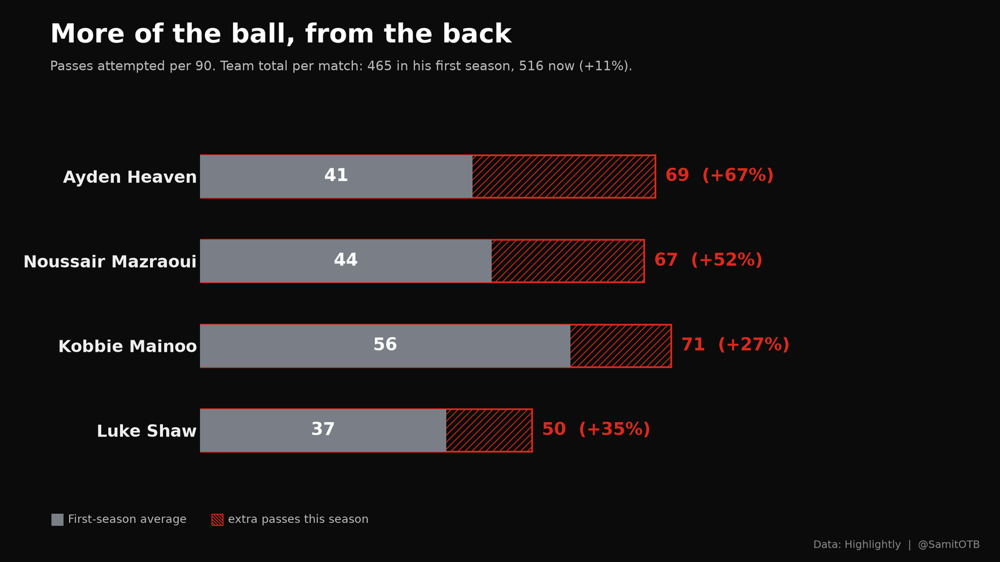
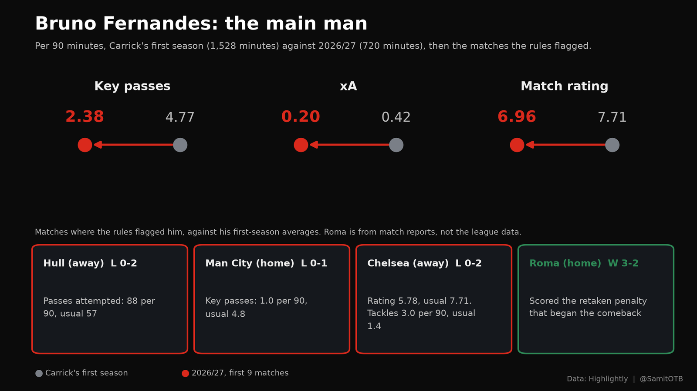
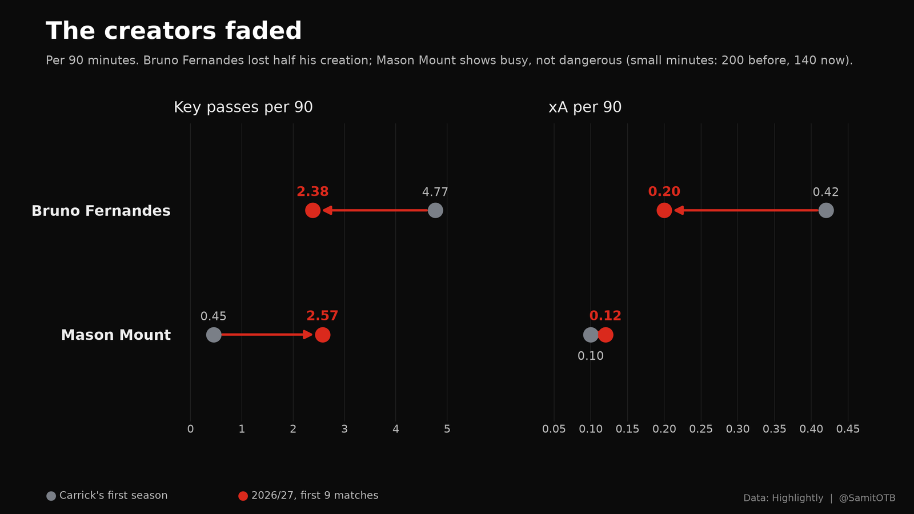
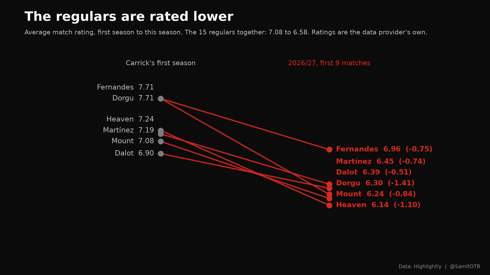

The Fall of Carrick’s Manchester United, in Numbers
Summary
Michael Carrick took over Manchester United in January 2026. In his first season, the last 17 Premier League matches of 2025/26, United won 12, drew 3 and lost 2, getting 2.29 points a match. In the first 9 matches of 2026/27, his second season, they have won 1, drawn 4 and lost 4, getting 0.78 points a match. I compared the two periods, match-by-match averages, with the same rules for every number. Five findings, then a note on Tuesday’s win over Roma, which may be the start of a turnaround:
- The chances did not change; the goals did. United create 1.55 xG a match, against 1.59 in his first season (-2%). They score 1.11 goals a match, against 1.94 (-43%). His first-season team beat its xG by 0.35 goals a match; this team misses it by 0.44. That 0.79 swing is 95% of the drop in goals.
- The defence is worse, and its luck has gone. xG conceded rose from 1.27 to 1.63 (+29%). Goals conceded rose from 1.06 to 1.67. His first-season defence conceded 0.21 fewer goals than the chances against it; this one concedes 0.04 more.
- Against the same seven opponents, 16 points became 4. United played seven teams in both periods. Against them they went from 5 wins, 1 draw and 1 defeat (12 goals for, 6 against) to 0 wins, 4 draws and 3 defeats (5 for, 11 against).
- Bruno Fernandes, the main man, has halved his creation. His key passes per 90 fell from 4.77 to 2.38 and his xA from 0.42 to 0.20, over 720 minutes this season. In the defeats he went missing in different ways: 1.0 key passes per 90 against Manchester City, a rating of 5.78 at Chelsea. Against Roma on Tuesday he scored the penalty that started the comeback.
- More of the ball, from the back, without more danger; the regulars are rated lower. Passes rose 11% a match, driven by defenders (Heaven 41 to 69 passes per 90, Mazraoui 44 to 67), and the 15 regulars average a rating of 6.58 against 7.08.
The comparison
The yardstick is Carrick’s first season: the last 17 league matches of 2025/26, from 17 January to 24 May. Against it I set United’s first 9 league matches of 2026/27, from 22 August to 31 October, his second season so far. Team figures are averages per match; player figures are per 90 minutes.
| Carrick’s first season (17 matches) | 2026/27, first 9 | |
|---|---|---|
| Record (won-drawn-lost) | 12-3-2 | 1-4-4 |
| Points per match | 2.29 | 0.78 |
| Goals scored | 1.94 | 1.11 |
| Goals conceded | 1.06 | 1.67 |
| xG created | 1.59 | 1.55 |
| xG conceded | 1.27 | 1.63 |
The single win this season, 5-2 against Ipswich, supplied half of the season’s 10 goals. Without it, United have scored 5 goals in 8 matches.
Like for like: the same seven opponents
The obvious objection to comparing two stretches of fixtures is that the opponents differ. Seven teams appear in both: Manchester City, Fulham, Tottenham, Everton, Bournemouth, Leeds and Chelsea. Here are the results against each, scores only, no model involved.
| Opponent | Carrick’s first season | 2026/27 |
|---|---|---|
| Manchester City | W 2-0 (home) | L 0-1 (home) |
| Fulham | W 3-2 (home) | D 1-1 (away) |
| Tottenham | W 2-0 (home) | D 1-1 (home) |
| Everton | W 1-0 (away) | D 2-2 (away) |
| Bournemouth | D 2-2 (away) | L 0-3 (home) |
| Leeds | L 1-2 (home) | D 1-1 (away) |
| Chelsea | W 1-0 (away) | L 0-2 (away) |
| Total | 5 wins, 1 draw, 1 defeat: 16 points, goals 12-6 | 0 wins, 4 draws, 3 defeats: 4 points, goals 5-11 |

Same opponents, so opposition strength cannot explain the gap. Per match, that is 2.29 points becoming 0.57, and a goal difference of +0.86 a match becoming -0.86. Four of the seven results this season were draws, against one last time. In his first season, United kept four clean sheets against these seven (Manchester City, Tottenham, Everton, Chelsea); this season they have kept none, and they lost to both City and Chelsea after beating them without conceding. Venues changed for three fixtures (Fulham, Bournemouth, Leeds), a small caveat on seven matches.
Finding 1: the same chances, far fewer goals

This is the finding that changes the story. United’s attack is creating almost exactly the chances it created in Carrick’s first season: 1.55 xG a match against 1.59. On chances alone, the record should look similar. The goals tell a different story.
| Per match | Carrick’s first season | 2026/27 | Change |
|---|---|---|---|
| xG created | 1.59 | 1.55 | -2% |
| Goals scored | 1.94 | 1.11 | -43% |
| Goals minus xG | +0.35 | -0.44 | a swing of 0.79 |

Goals fell by 0.83 a match. The finishing swing is 0.79 of that, about 95%. In his first season, United scored 0.35 goals a match more than its chances warranted over 17 games; this United scores 0.44 fewer.
One player shows the swing most clearly: Matheus Cunha. He is still getting his shots on target, about 0.9 per 90 minutes this season against 1.0 in Carrick’s first season, a change too small to matter. But his goals per 90 fell from 0.48 to 0.14 over 622 minutes, the only significant drop among the six players with enough minutes in both periods. Across those six, shots on target held steady too, 0.6 per 90 before and 0.7 now. The shots are arriving; fewer of them are going in.
Two cautions. Over 17 matches, beating xG by 0.35 a game is a lot to sustain, so part of last season’s output was probably above what the chances deserved, and some of this swing may be a return to normal. And 9 matches is a short run in which finishing alone can wander. Both are reasons to read the swing as a mix of regression and a real dip, not as proof that the forwards got worse. What the data does say is that United’s problem this season is not that the attack stopped creating chances.
Finding 2: the defence concedes more chances, and its luck has gone

| Per match | Carrick’s first season | 2026/27 | Change |
|---|---|---|---|
| xG conceded | 1.27 | 1.63 | +29% |
| Goals conceded | 1.06 | 1.67 | +57% |
| Goals conceded minus xG conceded | -0.21 | +0.04 | a swing of 0.25 |
The defence has two problems. Opponents are creating 29% more xG against United than they did in his first season: that part is real. On top of it, that team conceded 0.21 fewer goals than the chances against it suggested, which is a sign of good goalkeeping or fortune. This season the sign has flipped slightly, to 0.04 more.
Of the 0.61 extra goals conceded each match, about 0.36 comes from more chances against (xG up from 1.27 to 1.63) and about 0.25 from the end of that cushion. As with finishing, part of the second number is probably normal variation. The first is not.
The pattern in the defeats shows how quickly it deteriorated. In the four defeats, xG conceded was 1.01 at Hull, 1.10 against Manchester City, 2.18 against Bournemouth and 2.67 at Chelsea. The first two were better than the first-season average of 1.27. The last two, six days apart, were far worse.
Finding 3: more of the ball, from the back
The team numbers show a United that has more of the ball than the first-season team did, without turning it into more chances.
| Per match | Carrick’s first season | 2026/27 | Change |
|---|---|---|---|
| Passes attempted | 465 | 516 | +11% |
| Pass accuracy | 83.3% | 84.3% | +1.0 points |
| Completed dribbles | 6.1 | 7.4 | +23% |
| Interceptions | 9.5 | 11.6 | +21% |
| Tackles | 17.6 | 16.8 | -5% |
| Duels won | 52.9% | 50.4% | -2.6 points |
| Times caught offside | 1.2 | 1.9 | +61% |
The extra passing comes from the back and the base of midfield, per 90 minutes:

When defenders pass this much more and the team creates the same number of chances, the ball is circulating without getting through. The team is also caught offside more often (1.9 a match against 1.2), which can be a sign of a side pushing forward without the right runs, though the data cannot say so. The defensive picture is mixed: more interceptions, but slightly fewer tackles, and duels won down from 52.9% to 50.4%.
Finding 4: Bruno Fernandes, the main man

Bruno Fernandes is United’s main man. He is the captain, and in Carrick’s first season he averaged 4.77 key passes and 0.42 expected assists (xA) per 90 minutes across 1,528 minutes: the engine of the attack. This season both numbers have halved. A main creator whose output halves can leave the same number of chances arriving in worse positions, which would fit Finding 1. That is a hypothesis, not a finding, but it is where I would look first.
| Bruno Fernandes, per 90 | Carrick’s first season | 2026/27 |
|---|---|---|
| Key passes | 4.77 | 2.38 |
| xA | 0.42 | 0.20 |
| Rating | 7.71 | 6.96 |
His minutes are large in both periods, 1,528 before and 720 now, so this is not noise. His rating fell less than most of the other players flagged in this piece.
Bruno Fernandes, match by match
Where the rules flagged him, against his first-season per 90 averages:
| Match | What changed for Fernandes |
|---|---|
| Hull City (away), lost 0-2, 22 Aug | Passes attempted 88 per 90 against 57; completed 74 against 46. The rules flagged only his passing volume. |
| Manchester City (home), lost 0-1, 13 Sep | Key passes 1.0 per 90 against 4.8. Shots 1.00 per 90 against 1.47, with xG per shot 0.03 against 0.15. |
| Chelsea (away), lost 0-2, 31 Oct | Rating 5.78 against 7.71. xA 0.11 per 90 against 0.42. Tackles 3.0 per 90 against 1.4. |
| Roma (home), won 3-2, 3 Nov, Champions League | Scored the retaken penalty in the 58th minute that began the comeback (from match reports; not in the league data above). |
Read in order, the league matches show three different failures: a Fernandes who passes more and creates nothing flagged, a Fernandes whose creation disappears, and a Fernandes who spends his match defending (twice his usual tackles). The league numbers say his creation has halved. The Roma penalty says he can still change a match.
Around him

Elsewhere in the attack, the pipeline flagged a second pattern, labelled “busy, not dangerous”: a player whose key passes jump while his xA barely moves. Mason Mount shows it: key passes per 90 up from 0.45 to 2.57, xA only from 0.10 to 0.12. Noussair Mazraoui shows a milder version (key passes 0.63 to 1.89, xA 0.02 to 0.04). Mount’s minutes are small in both periods (200 before, 140 now), so treat his figures as a lead, not a result.
Together, Fernandes’ drop and the busy-but-quiet numbers around him describe an attack that is delivering the ball more often from more players, and getting less from each delivery. It fits Finding 1: the volume of chances is intact, and the quality of what the creators supply, and of what is done with it, is down.
Finding 5: the regulars are rated lower, and the four defeats up close

The 15 regulars average a rating of 6.58 this season, against 7.08 in his first season. The biggest falls among players with enough minutes in both:
| Player | Rating, Carrick’s first season | Rating, 2026/27 | Change |
|---|---|---|---|
| Patrick Dorgu | 7.71 | 6.30 | -1.41 |
| Ayden Heaven | 7.24 | 6.14 | -1.10 |
| Mason Mount | 7.08 | 6.24 | -0.84 |
| Bruno Fernandes | 7.71 | 6.96 | -0.75 |
| Lisandro Martínez | 7.19 | 6.45 | -0.74 |
| Diogo Dalot | 6.90 | 6.39 | -0.51 |
Ratings are the data provider’s own, a judgement of a match that already blends results and involvement, so I treat them as a summary of the other findings, not as an independent one.
The four defeats up close
The four defeats (Hull 0-2, Manchester City 0-1, Bournemouth 0-3, Chelsea 0-2) hold the sharpest version of the story. United created 1.83, 1.00, 1.18 and 1.17 xG in them, 5.18 in total, and scored nothing. Hull is the finishing problem: United created 15% more xG than the first-season average, conceded 1.01, and lost. The other three are creation problems, with xG between 26% and 37% below the first-season average, and the opponent creating more in each. In the last two, the defence broke: Bournemouth created 2.18 xG, Chelsea 2.67. Lisandro Martínez rated 5.23 at Chelsea, against a first-season average of 7.19.
What it adds up to
The fall from 2.29 points a match to 0.78 has two parts, and they are not equally worrying.
- Finishing (probably part regression). Goals scored fell by 0.83 a match with no fall in xG. That team was scoring well above its chances. Some of this will correct, in either direction, as the sample grows.
- Defending (the part to watch). Opponents now create 29% more xG against United, and the cushion from goalkeeping and luck has gone. The like-for-like record backs it: no clean sheet in seven matches against opponents United beat four times without conceding last season.
- Possession without penetration. More passes from the back, fewer key passes from Fernandes, more offsides, the same xG. It reads like a team that has changed how it plays without changing what it creates.
What to watch
- xG conceded. The last two defeats both exceeded 2.0. A third would suggest the defensive decline is structural.
- Fernandes’ key passes per 90. The cleanest single indicator of whether the attack is working, because the rest of the team’s creation has not replaced his.
- Passes against xG. A match with 600 passes and 1.2 xG is a warning, not a sign of control.
- Goals minus xG. If it stays negative over a much longer run, the finishing is a real problem and not variation.
A possible turning point: Roma
On Tuesday 3 November, United beat Roma 3-2 in the Champions League at Old Trafford after trailing 2-0 at half-time. It ended a run of nine matches without a win in any competition. Captain Bruno Fernandes started the comeback with a retaken penalty in the 58th minute, and Matheus Cunha, whose league goals per 90 had fallen from 0.48 to 0.14, scored twice in the last ten minutes (he was sent off in stoppage time). Match reports credit United with 15 shots and about 2.7 xG, against 1.55 xG a match in the league this season. That figure comes from a match report, not from the data used above.
Set against the findings, the night looks like this:
- Chances: yes. About 2.7 xG is far above this season’s league average of 1.55.
- Finishing: matched the chances for one night. Three goals from about 2.7 xG, after nine league matches in which the goals had run 0.44 a match below the xG.
- Fernandes: back at the centre. The captain scored the penalty that changed the match.
- Defence: not fixed. United were two goals down inside 17 minutes, the early damage the xG-conceded numbers describe.
Does this mean Carrick’s United has turned a corner? It might. Carrick called it an important night but did not call it a turning point, and he is right to be careful: it is one match, in a different competition, against a different kind of opponent, measured by a different data provider, and it came after nine matches without a win. A real turn would show in the league numbers: xG conceded back towards last season’s 1.27, Fernandes’ key passes per 90 back towards 4.77, and goals back in line with xG. Sunday’s match against Aston Villa is the first test.
Match details from Sky Sports, NBC Sports, Goal.com, The National and The Express Tribune.
Limits and method
- Limits. Nine matches is a small sample, and one of them, the 5-2 win over Ipswich, supplies half of the goals. The two periods contain different opponents, apart from the seven shared ones, and the comparison does not adjust for opponent strength or for squad changes between seasons. xG is a model, and two providers can disagree. Ratings are the data provider’s own. The data has no shot locations or tracking, so it cannot show pressing or marking. Some player baselines rest on few minutes (Mount: 200 before, 140 now).
- Method. Data: per-player and per-team match statistics from Highlightly. Period A is United’s first 9 Premier League matches of 2026/27 (22 August to 31 October 2026); Period B is Carrick’s first season, his 17 league matches (17 January to 24 May 2026). Team figures are averages per match. Player figures are per 90 minutes, for players with at least 90 minutes in each period. A change is reported only if it is large in both absolute and percentage terms, and only for statistics relevant to the player’s position. Findings come from fixed rules, so the same two periods always give the same findings; the interpretation is mine.
The analysis was produced with Match Compare, an open tool I built. It compares one match with a baseline, or one set of matches with another, and checks every number in its written summaries against the data. Try the tool · Read the code